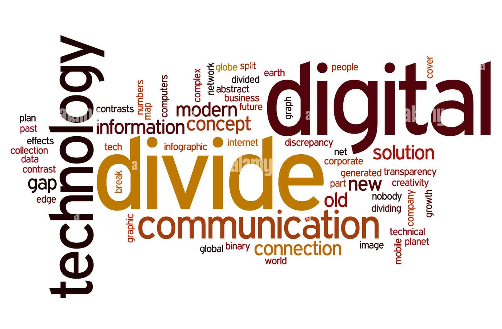

Definizione di Digital Divide
Il digital divide rappresenta la disparità nell’accesso alle tecnologie digitali e a Internet. Questa disuguaglianza può derivare da fattori economici, geografici, culturali o educativi, limitando le opportunità di milioni di persone in tutto il mondo. Questa disparità si manifesta in diversi modi:
-
Accesso a Internet:Molte comunità non hanno connessioni affidabili.
-
Disponibilità di dispositivi:Alcuni non possono permettersi computer o smartphone.
-
Competenze digitali:La mancanza di alfabetizzazione tecnologica impedisce l’uso efficace delle risorse digitali.
Impatto sulla società
Il digital divide ha un impatto significativo sul mondo, creando una frattura tra chi ha accesso alle tecnologie digitali e chi ne è escluso. Questa disparità limita le opportunità educative, professionali e sociali, aumentando le disuguaglianze economiche tra paesi e comunità. Senza un accesso equo alle risorse digitali, miliardi di persone restano escluse dall'innovazione, dalla crescita e dalla partecipazione attiva nella società moderna.
